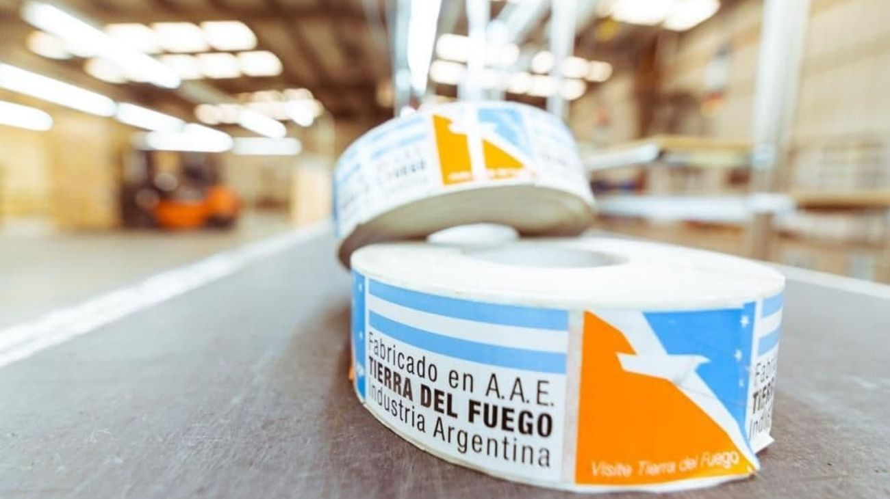

El Gobierno eliminó el aporte del 15% para empresas del régimen de Tierra del Fuego
La medida busca aliviar la carga tributaria, mejorar la situación financiera de las compañías y fortalecer la competitividad del régimen frente al nuevo escenario impositivo.

El Ejecutivo dejó sin efecto el aporte mensual aplicado sobre el beneficio del IVA, con el objetivo de aliviar la carga tributaria y mejorar la situación financiera de las empresas radicadas en la provincia.
El Gobierno nacional resolvió eliminar el aporte mensual del 15% sobre el beneficio de IVA que debían abonar las empresas adheridas al régimen de promoción económica de Tierra del Fuego, una obligación que estaba vigente desde el año 2021.
La decisión implica una reducción directa de la carga tributaria para las compañías que operan bajo este esquema, el cual fue diseñado para incentivar la producción y el empleo en la provincia más austral del país. Con esta modificación, las firmas dejarán de realizar un pago adicional que impactaba sobre los beneficios fiscales otorgados por el régimen.
Desde el Ejecutivo señalaron que la medida se enmarca en el nuevo escenario tributario y económico, y tiene como objetivo mejorar la situación financiera de las empresas alcanzadas.
El alivio fiscal busca dar mayor previsibilidad y permitir una mejor planificación de costos e inversiones.
Asimismo, la eliminación del aporte apunta a fortalecer la competitividad del régimen de promoción fueguino, considerado clave para el desarrollo industrial y la generación de empleo en la región. El Gobierno espera que esta decisión contribuya a sostener la actividad productiva y a consolidar el esquema de incentivos vigente.